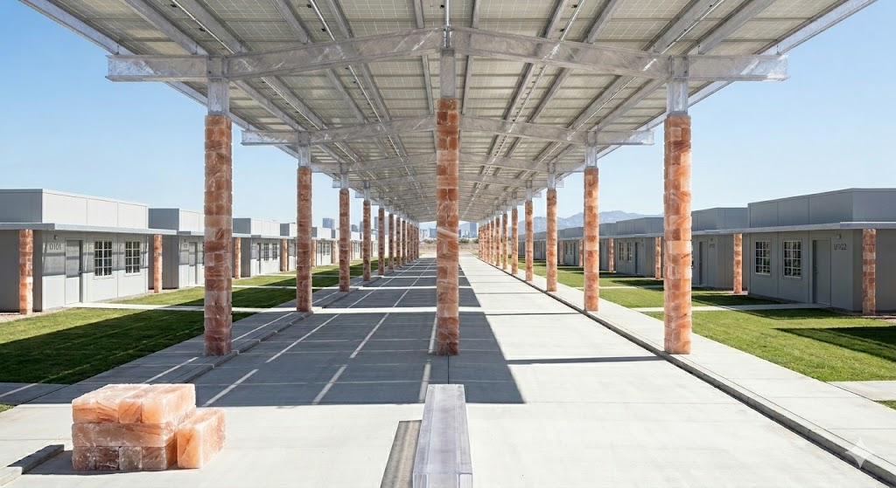

The Decentralized "Cellular" Grid
Solar Canopies & The Industrial Spine
Our microgrid generates 85 to 90 MW of peak daytime load. To keep the 1,000 residential units pristine and minimalist, the heavy solar generation occurs via massive PETG iBeam canopies.

Alleyway Energy Storage
We do not rely on a centralized battery warehouse. Instead, our energy storage is completely decentralized. Modular flow battery banks sit on 12-inch Sorel cement pedestals in our shaded, gated utility alleyways.

Night Shift sCO2 Turbines
When the sun sets, our industrial spine shifts to continuous power generation. We utilize modular supercritical CO2 (sCO2) turbines fueled by pure hydrogen and oxygen.


Financial & Engineering Methodology
ThalaCast is a deep-tech infrastructure project designed to deploy First-Of-A-Kind (FOAK) closed-loop engineering. Because several of our core systems—specifically our Oxy-Hydrogen Supercritical CO2 (sCO2) Turbines and automated iBlock extrusion lines—are custom, commercial-scale integrations of existing pilot technologies, our capital expenditure (CapEx) models are built using strict Class 5 Analogous Estimating.
Pricing the Future
We do not rely on standard "off-the-shelf" vendor quotes for our advanced systems. Instead, our CapEx matrix leverages the known costs of the closest equivalent heavy industrial hardware (e.g., natural gas sCO2 infrastructure and automotive-grade injection molding) and applies a heavy FOAK premium. This premium accounts for the advanced metallurgy (such as Inconel superalloys required to prevent hydrogen embrittlement), bespoke combustor aerodynamics, and the Front-End Engineering Design (FEED) required to successfully deploy these systems.
The Phased De-Risking Strategy
To protect our investors and ensure municipal stability, ThalaCast employs a phased power rollout. Phase 1 operates exclusively on proven, commercially available solar and battery storage architectures (LFP and Iron-Air). This allows the city to become fully functional, habitable, and profitable while serving as a secure, real-world R&D incubator for our Phase 2 Oxy-Hydrogen turbine deployment.
By over-capitalizing our early tech integrations through built-in contingency buffers and dedicated working capital, we ensure that ThalaCast remains financially resilient while pushing the absolute bleeding edge of zero-emission industrial design.